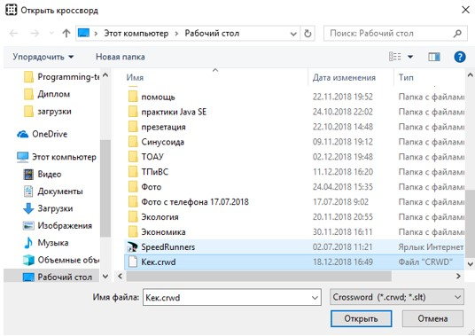
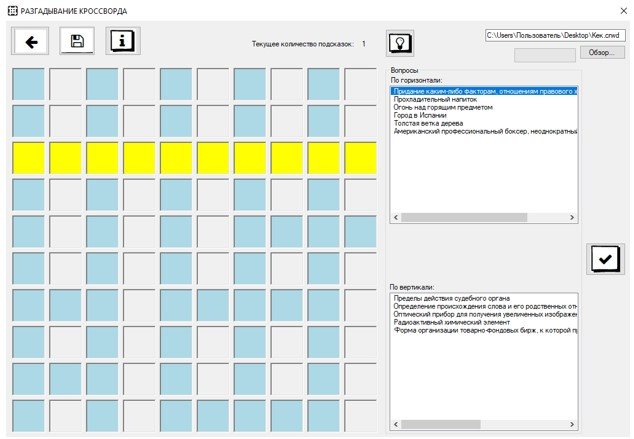

После авторизации пользователь должен загрузить кроссворд, чтобы начать или продолжить разгадывание кроссворда.
Для этого нужно выбрать файл с расширением .crwd и открыть его. После появляется окно для разгадывания кроссворда
Разгадывать можно путем вписывания слова по буквам
Во время разгадывания можно использовать подсказку.Выбранное слово впишется за пользователя.
По завершению разгадывания кроссворда, пользователь видит сообщение о правильности разгадывания кроссворда

